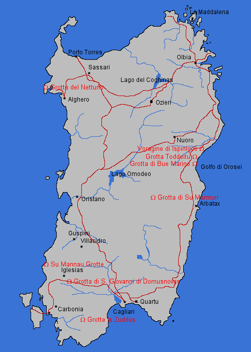

Sardegna
Sardinia

 Museo dell'Arte Mineraria
Museo dell'Arte Mineraria Grotta di Bue Marino
Grotta di Bue Marino- Grotta del Fico
- Galleria Henry
- Grotte Is Janas
- Grotte Is Zuddas
- Voragine di Ispinigoli
- Miniera di Masua
- Miniera Monteponi
- Miniera Montevecchio
- Miniera di Naracauli
- Grotte di Nettuno
- Grotta di San Michele/Ozieri
- Miniera di Rosas
- Grotta di S. Giovanni di Domusnovas
- Grotta di Santa Barbara
 Sa Rocca
Sa Rocca- Museo del Carbone della Grande Miniera di Serbariu
- Su Mannau Grotte
- Grotta di Su Marmuri
- Tiscali
- Grotta Toddeitu
Sardinia is much older than the italian Peninsula. Its structure is complex and quite differentiated. It has areas of granite, of volcanic rocks and large karst areas.
The north and the south east is built on granites, forming a unique landscape with strange rock formations. The west is volcanic with basalt and other volcanic rocks. The east is covered with slate and calcareous sediments. The south west is famous for its resources like coal and lead and tin ores. They were mined two thousand years ago by Romans and Phoenicians.
- See also
 Caves of Sardinia
Caves of Sardinia- minieredisardegna.it, mines in Sardinia. (

 )
) - La Storia delle miniere della Sardegna, the history of mining in Sardinia. ()
- Storia Mineraria della Sardegna, the history of mining in Sardinia. ()
- Sardinien, Landschaft und Höhlen (visited: 28-JUL-2011) by Franz Lindenmayr. (
 )
)
 Index
Index Topics
Topics Hierarchical
Hierarchical Countries
Countries Maps
Maps Search
Search